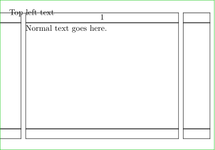

Contents
Summary
The command
\setlayer
fills layers
Settings
| \setlayer[...][...][...=...,...]{...} | |
| [...] | name |
| [...] | left right even odd |
| ...=...,... | inherits from \setuplayer |
| {...} | content |
Description
Puts content in layers
Examples
Example 1
-
\setuppapersize[A8,landscape] \showframe \definelayer[mwe][repeat=yes, preset=lefttop, hoffset=.125in, voffset=.125in] \setupbackgrounds[page][background=mwe] \setlayer[mwe] {Top-left text} \starttext Normal text goes here. \stoptext
- 